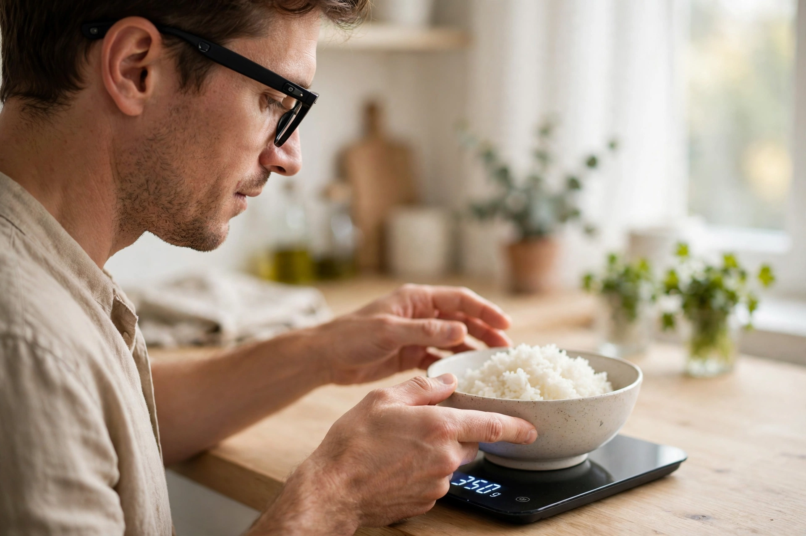
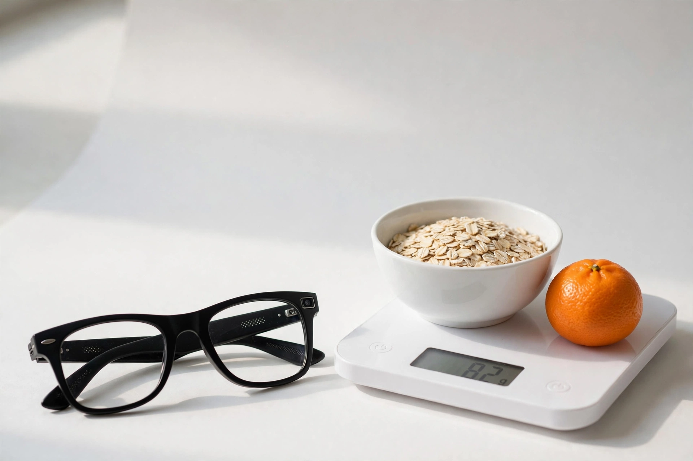

You eat. It logs.
Your food, weighed and logged, hands free.
Ray-Ban Meta glasses look at the kitchen scale you already own, read the food and the grams off its display, and write the line. No app on the scale, no pairing, no hands.
- 18:42cooked white rice87 gagreed
- 18:43grilled chicken breast142 gconfirmed
- 18:44olive oil9 gagreed
- 18:45canned pumpkin120 gcorrected
- 18:47
- 1Put the food on the scale.
- 2Say log it, or press the button on the glasses.
- 3Hear it back: 87 grams of cooked white rice, logged.
Two reads that agree log the entry. Two reads that disagree become a question in your ear: 81 or 87 grams? Your answer is the label.

Built on
- Ray-Ban Meta
- the glasses, through the Wearables Device Access Toolkit: camera stream, microphone, the button
- Muse Spark
- reads the frame: the food, the number on the display, how sure it is
- Muse Voice Transcribe
- hears your answer when the two reads disagree
- Muse Image
- made the pictures on this page
An entry in the Meta Global AI Developer Hackathon, Indie track, built in Montréal in the ten days to 2026-NOVEMBER-04. Every entry stays on your phone.